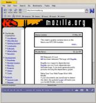
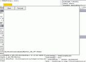

|
Mozilla on BeOS - ScreenshotsM11 code base on BeOS [ 11.22.99 ] M7 code base on BeOS [ 06.21.99 ] www.be.com [ 06.04.99 ] www.beoscentral.com [ 06.04.99 ]  www.mozilla.org [ 06.04.99 ] apprunner... [ 05.22.99 ] www.amiga.com [ 03.08.99 ]  www.mozilla.org
www.mozilla.org[ 03.08.99 ]  www.x-files.com
www.x-files.com[ 03.08.99 ]  #1 [ 01.13.99 ] back to Mozilla on Beos ... |
|
|
Copyright © 1998-1999 The Mozilla Organization.
Last modified November 24, 1999. |
|